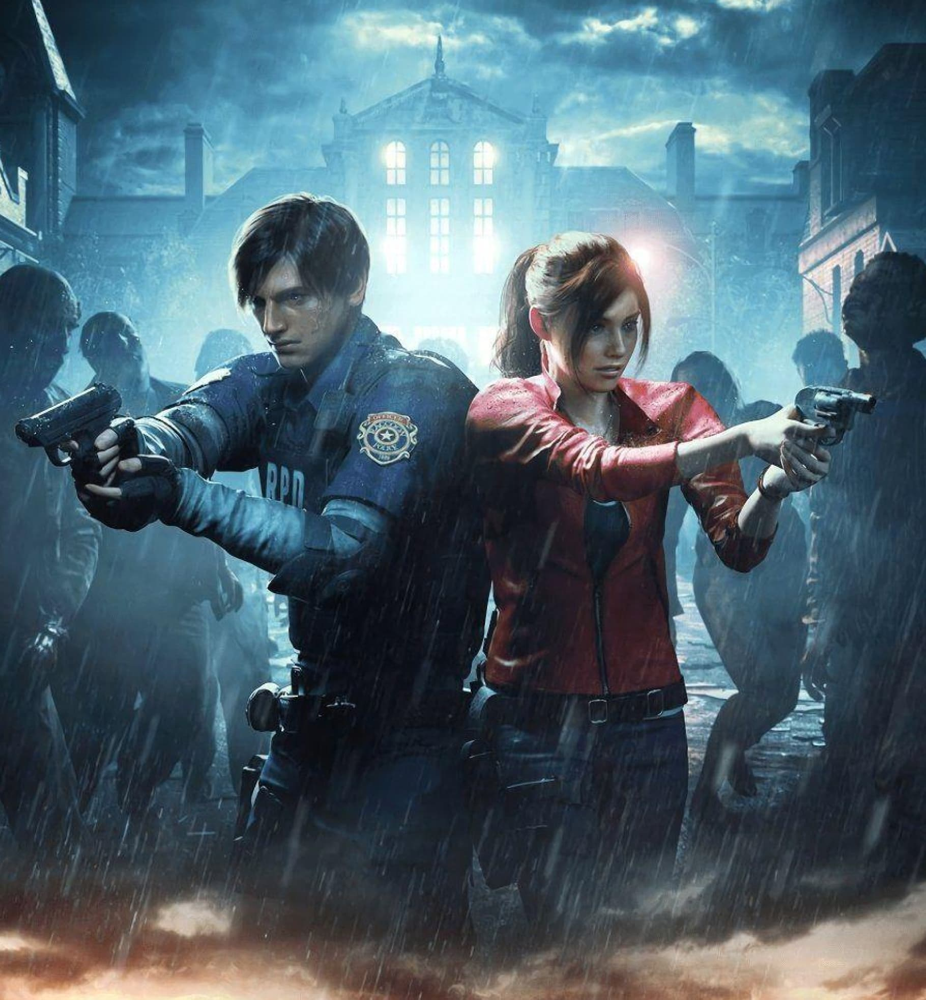
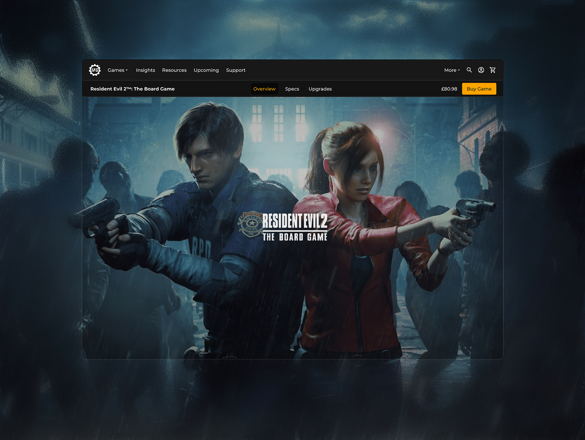
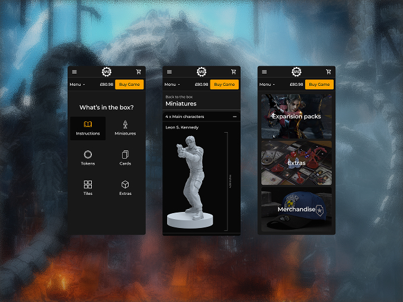
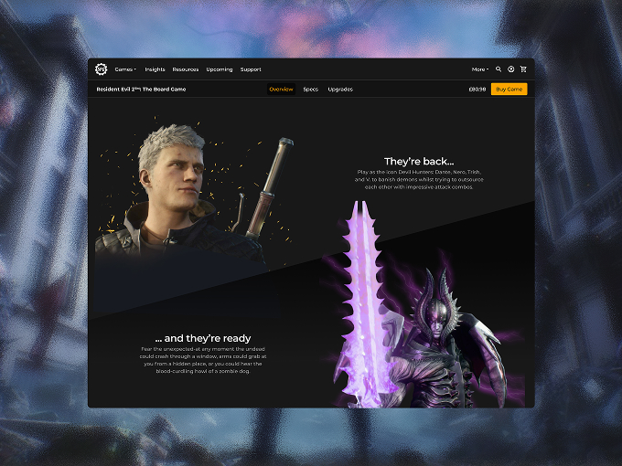
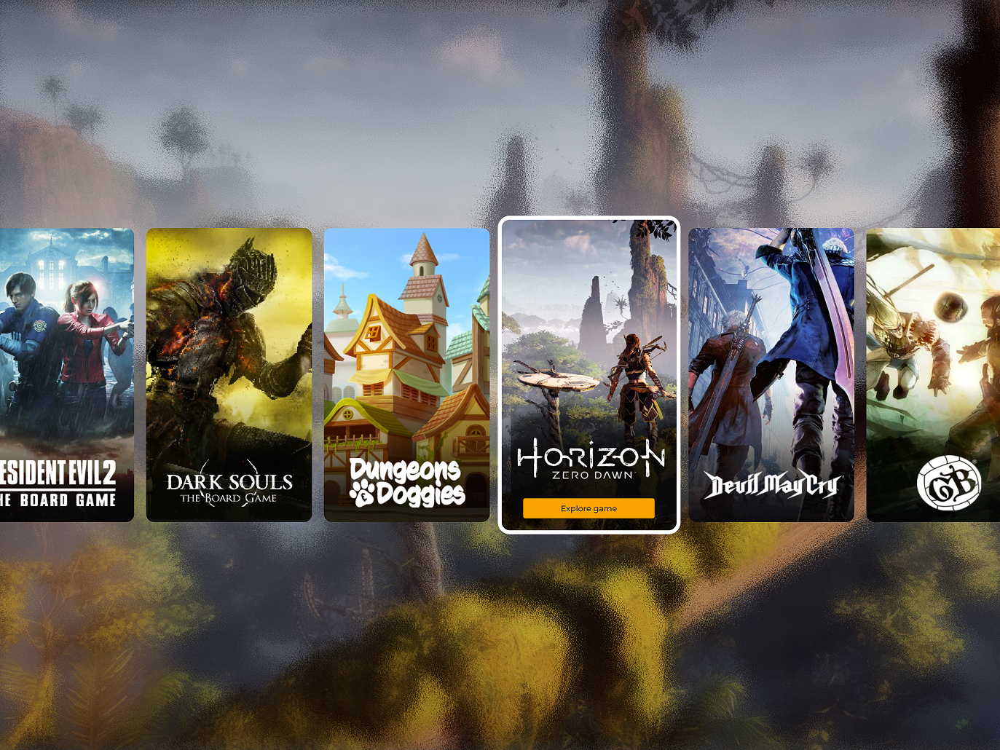
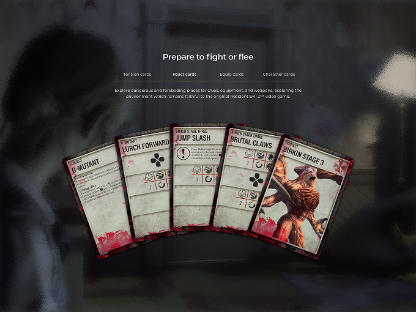
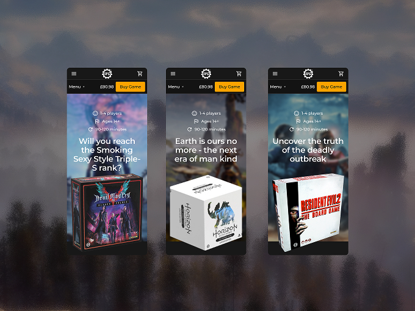
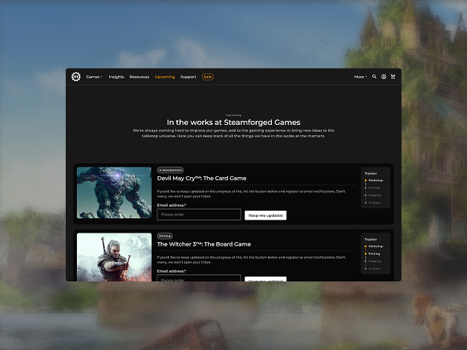
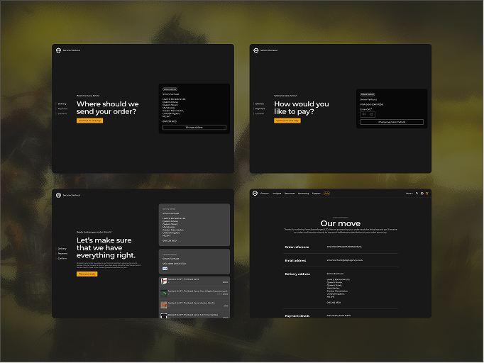

Steamforged Games
Cluttered Catalogues to Record Sales
Steamforged Games is a Manchester-based tabletop publisher known for record-breaking Kickstarters and licensed adaptations like Dark Souls and Resident Evil. I led the redesign of their global e-commerce platform, restructuring how a fast-growing, licence-heavy catalogue got discovered and bought. Conversion rate jumped 126% post-launch, with e-commerce revenue up 261%.
Results
- +126% conversion rate
- +261% e-commerce revenue post-launch
- +160% pages per session
- +46% global sessions
- Awwwards Honorable Mention · The Drum Award

The Challenge
Steamforged's catalogue was expanding fast, new licensed titles, expansions, and limited runs launching constantly, but the site couldn't keep pace. Discovery was clunky, and the structure didn't clearly separate core games, expansions, and merchandise the way fans actually shopped. Customers were also asking for details the site didn't give them: figure scale, materials, box contents, the specifics hobbyists need before committing to a purchase. That gap meant hesitant buyers and a steady stream of support tickets asking questions the product pages should have already answered.


The Approach
I started by auditing the existing site and analytics to find where discovery was breaking down, then benchmarked against other tabletop and hobby brands to see how the best in the category handled complex catalogues. Talking to Steamforged's own community surfaced the real insight: fans didn't just want a nicer-looking site, they wanted the specific product details that let them buy with confidence, figure scale, materials, box contents, the stuff hobbyists check before committing.
That became the core of the redesign. I built a modular product page system anchored around a dedicated specification panel on every game, so that detail sat right alongside the immersive brand storytelling rather than replacing it. Category pages were rebuilt for scanning and filtering across franchises and product types, so browsing a catalogue that spanned dozens of licensed titles finally felt manageable. To keep the wider team shipping new titles at pace after launch, I also built out a component library in Figma, so new products could go live without design starting from scratch each time.

The Outcome
The rebuilt platform gave Steamforged a structure that could keep pace with its release schedule. Conversion rate rose 126% and e-commerce revenue grew by 261% post-launch, with pages per session up 160% as fans explored deeper into the catalogue instead of bouncing off it, and global sessions up 46%. Support tickets tied to product clarity dropped, a direct result of the specification panels answering questions fans used to have to raise separately. The new structure also proved itself under pressure: when paid search and shopping campaigns launched around US Black Friday, the platform handled the spike and converted it, with traffic up 27% and revenue up 18% over that weekend. The work picked up an Awwwards Honorable Mention and a Drum Award.


Reflection
This project was a good reminder that even the most visual, brand-led experiences still need to answer specific, practical questions clearly. Storytelling and structured information aren't in competition, they need each other.

